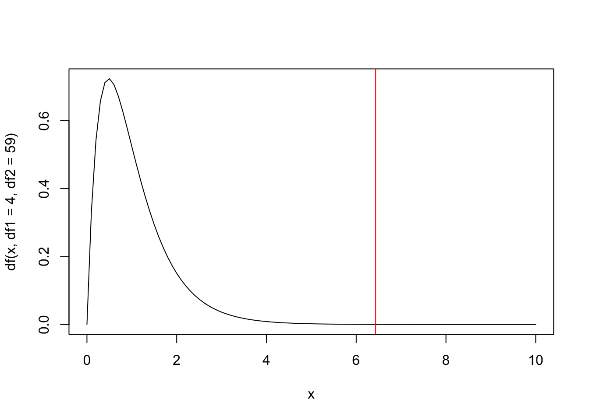

present a “general linear null hypothesis” - the basis for all hypothesis tests we will consider in these notes;
derive an “\(F\)-test” for tesing this general linear null hypothesis;
understand how particular testing problems are derived from this general linear null hypothesis;
implement hypothesis tests for linear models in R;
review the different presentations and implementations of hypothesis tests for linear models, and identify the most appropriate in different situations.
5.1 The linear hypothesis
5.1.1 A general testing problem
If you have studied hypothesis testing for linear models before, e.g. for the simple linear regression model \[
Y_i = \beta_0+\beta_1 + \varepsilon_i,
\] you may be used to tests of the form \[
H_0: \beta_1=0,
\] which involve computing a ``\(T\)-statistic’’ and comparing with the \(t_{n-2}\) distribution.
Here, we present the most general linear null hypothesis, which takes the form \[
H_0: \quad C\boldsymbol{\beta}=\boldsymbol{c},
\] where \(C\) is a \(q\times p\) matrix and \(\boldsymbol{c}\) is a \(q\times 1\) vector of known constants. This hypothesis simultaneously asserts specific values for \(q\) linear functions of \(\boldsymbol{\beta}\). Without loss of generality, we can assume that \(C\) has rank \(q\).
The usual alternative is simply \[H_1: \quad C\boldsymbol{\beta}\neq\boldsymbol{c}\] i.e. that at least one of the \(q\) linear functions does not take its hypothesized value. This is a two-sided alternative; one sided alternatives are unlikely to be of interest/appropriate.
Exercise
Exercise 5.1 How do we write our hypothesis test for the simple linear regression model in this notation?
Solution
For the test \(H_0: \beta_1=0\), we have \[
C = (0\quad 1), \quad \boldsymbol{\beta} = \left(\begin{array}{c}\beta_0\\\beta_1\end{array}\right),\quad \boldsymbol{c}=(0).
\]
Exercise
Exercise 5.2 For one-way ANOVA models, how do we write the test for equal group means using this notation? Try using using both parameterisations presented in Chapter 3.
Solution
If we write the model as \[
Y_{ij}=\mu_i+\varepsilon_{ij},
\] for \(i=1,\ldots,g\), then the usual hypothesis we want to test is \[
H_0:\mu_1=\mu_2=\ldots,\mu_g.
\] This can be written as a set of \(g-1\) equations: \[\begin{align}
\mu_1 -\mu_2 &=0,\\
\mu_2 -\mu_3 &=0,\\
\cdots &\\
\mu_{g-1} -\mu_g &=0.
\end{align}\] So in our notation, we have \[
C = \left(\begin{array}{cccccc}1 & -1 & 0 & \cdots&0 & 0\\
0 & 1 & -1 & \cdots &0 & 0\\
\vdots & \vdots & \vdots & \vdots & \vdots & \vdots \\
0 & 0 & 0 & \cdots & 1 & -1\end{array}\right), \quad \boldsymbol{\beta} = \left(\begin{array}{c}\mu_1 \\ \vdots \\\mu_g\end{array}\right),\quad \boldsymbol{c}=\left(\begin{array}{c}0 \\ \vdots \\0\end{array}\right).
\] If we write the model as \[
Y_{ij}=\mu+\tau_i+\varepsilon_{ij},
\] for \(i=1,\ldots,g\), with the constraint \(\tau_1=0\), then the usual hypothesis we want to test is \[
H_0:\tau_i=0\quad \forall i.
\] So in our notation, we have \[
C = \left(\begin{array}{cccccc}0 & 1 & 0 & \cdots&0 & 0\\
0 & 0 & 1 & \cdots &0 & 0\\
\vdots & \vdots & \vdots & \vdots & \vdots & \vdots \\
0 & 0 & 0 & \cdots & 0 & 1\end{array}\right), \quad \boldsymbol{\beta} = \left(\begin{array}{c}\mu\\\tau_2 \\ \vdots \\\tau_g\end{array}\right),\quad \boldsymbol{c}=\left(\begin{array}{c}0 \\ \vdots \\0\end{array}\right).
\]
5.1.2 Constructing a test
To construct a test, we consider the estimator \(C\boldsymbol{\hat{\beta}}\). If the null hypothesis is true, we have that \[
E(C\boldsymbol{\hat{\beta}})=C \boldsymbol{\beta}=\boldsymbol{c},
\] and \[
\mathrm{Var}(C \boldsymbol{\hat{\beta}})=C \mathrm{Var}(\boldsymbol{\hat{\beta}})C^T=\sigma^2C(X^TX)^{-1}C^T,
\] and so \[C\boldsymbol{\hat{\beta}}\sim N_q(\boldsymbol{c},\sigma^2C(X^TX)^{-1}C^T).\] But as \(C\boldsymbol{\hat{\beta}}\) is a vector, this isn’t a result that we can easily use directly for a hypothesis test; we normally work with scalar test statistics. However, this result can be used to show that, again if \(H_0\) is true then \[
(C\boldsymbol{\hat{\beta}}-\boldsymbol{c})^T
\left(C(X^TX)^{-1}C^T\right)^{-1} (C\boldsymbol{\hat{\beta}}-\boldsymbol{c})/\sigma^2 \sim \chi^2_q.
\] We use some further results from distribution theory: if \(X\) and \(Y\) are independent random variables with \(X\sim \chi^2_{\nu_1}\) and \(Y\sim \chi^2_{\nu_2}\) then \(\frac{X/\nu_1}{Y/\nu_2}\) has the \(F_{\nu_1,\nu_2}\) distribution. From the result above, and recalling that \[
(n-p)\hat{\sigma}^2\sim \sigma^2\chi_{n-p}^2,
\] we have the result that, if \(H_0\) is true, then \[
F:=\frac{ (C\boldsymbol{\hat{\beta}}-\boldsymbol{c})^T
\left(C(X^TX)^{-1}C^T\right)^{-1} (C\boldsymbol{\hat{\beta}}-\boldsymbol{c}) }{
q\hat{\sigma}^2 } \sim F_{q,n-p}
\]
So for a \(100 \alpha\%\) significance test we will reject \(H_0\) if the test statistic \(F\) exceeds \(F_{q,n-p,\alpha}\), the upper \(100\alpha \%\) point of the \(F_{q,n-p}\) distribution. This is a one-tailed test, even though the original alternative hypothesis was two-sided. It is one-tailed because we are using sums of squares, so that any failure of the null hypothesis leads to a larger value of the test statistic. (For \(F\) to be small, we need \((C\boldsymbol{\hat{\beta}}\) similar to \(\boldsymbol{c}\); the null hypothesis is that these two vectors are equal))
5.2 Equivalence between the \(t\)-test and an \(F\)-test
As commented at the beginning of this chapter, you may have used a \(t\)-test before for testing whether single coefficients take a particular value (usually 0). This is equivalent to a particular \(F\)-test.
Testing the \(i\)th element \(\beta_i\) of \(\boldsymbol{\beta}\) is a special case of our general hypothesis, where \(q=1\) (only 1 hypothesis) and \(C\) is a row vector of zeroes except for a single 1 in the \(i\)-th position. Thus, we have \(H_0: \beta_i=c_i\). The \(F\)-statistic reduces to
\[
F=\frac{(\hat{\beta}_i-c_i)^2}{\hat \sigma^2 g_{ii}} \sim F_{1,n-p},
\] where \(g_{ii}\) is the \(i\)-th diagonal element of \(G=(X^TX)^{-1}\).
Previously, we explained that \[
\frac{\hat{\beta}_i-\beta_i}{\hat{\sigma}\sqrt{g_{ii}}}\sim t_{n-p}.
\] This could also be used to test the hypothesis \(H_0: \beta_i=c_i\): our test statistic would be \[
T = \frac{\hat{\beta}_i-c_i}{\hat{\sigma}\sqrt{g_{ii}}}\sim t_{n-p},
\] if \(H_0\) is true. But we see that \(T^2=F\), and the hypothesis tests are equivalent, because \[
X \sim t_\nu\iff
X^2 \sim F_{1,\nu}.
\]
5.3 The \(t\)-test in R
R will perform a \(t\)-test separately for each hypothesis \(H_0: \beta_i=c_i\), for \(i=1,\ldots,p\). The results of this can be seen using the summary() command. For example
lmCars <-lm(dist ~ speed, cars)summary(lmCars)
Call:
lm(formula = dist ~ speed, data = cars)
Residuals:
Min 1Q Median 3Q Max
-29.069 -9.525 -2.272 9.215 43.201
Coefficients:
Estimate Std. Error t value Pr(>|t|)
(Intercept) -17.5791 6.7584 -2.601 0.0123 *
speed 3.9324 0.4155 9.464 1.49e-12 ***
---
Signif. codes: 0 '***' 0.001 '**' 0.01 '*' 0.05 '.' 0.1 ' ' 1
Residual standard error: 15.38 on 48 degrees of freedom
Multiple R-squared: 0.6511, Adjusted R-squared: 0.6438
F-statistic: 89.57 on 1 and 48 DF, p-value: 1.49e-12
The last two columns in the Coefficients table give the corresponding test statistic and \(p\)-values. To be clear: for the simple linear regression model (with dist the dependent variable and speed the independent variable): \[
Y_i = \beta_0 + \beta_1x_i + \varepsilon_i,
\] the R output has given us observed values of the test statistics \[
T_{0,obs} = \frac{\hat{\beta}_0-0}{\hat{\sigma}\sqrt{g_{11}}}=-2.601, \quad T_{1,obs} = \frac{\hat{\beta}_1-0}{\hat{\sigma}\sqrt{g_{22}}}=9.464,
\] with \(p\)-values of \(0.0123\) and \(1.49\times 10^{-12}\) respectively (although for the latter, we should not claim such a precise order of magnitude! The precision is spurious here.)
5.4 The summary() commmand and the \(F\)-test output
Whenever we use the summary() command in R, we see the result of and \(F\)-test displayed at the bottom. This is a test of the hypothesis that all coefficients except the intercept term are zero.
As an example, consider the one-way ANOVA model for the cancer data, using the parameterisation \[
Y_{ij}=\mu + \tau_i + \varepsilon_{ij},
\] with \(\tau_1=0\):
library(tidyverse)cancer <-read_csv("https://oakleyj.github.io/exampledata/cancer.csv")lmcancer <-lm(survival ~ organ, data = cancer)summary(lmcancer)
Call:
lm(formula = survival ~ organ, data = cancer)
Residuals:
Min 1Q Median 3Q Max
-1371.91 -241.75 -111.50 87.19 2412.09
Coefficients:
Estimate Std. Error t value Pr(>|t|)
(Intercept) 1395.9 201.9 6.915 3.77e-09 ***
organBronchus -1184.3 259.1 -4.571 2.53e-05 ***
organColon -938.5 259.1 -3.622 0.000608 ***
organOvary -511.6 339.8 -1.506 0.137526
organStomach -1109.9 274.3 -4.046 0.000153 ***
---
Signif. codes: 0 '***' 0.001 '**' 0.01 '*' 0.05 '.' 0.1 ' ' 1
Residual standard error: 669.5 on 59 degrees of freedom
Multiple R-squared: 0.3037, Adjusted R-squared: 0.2565
F-statistic: 6.433 on 4 and 59 DF, p-value: 0.0002295
A null hypothesis of interest here is that the mean surival time is the same for all groups (organs): \[
H_0: \tau_i=0 \quad \forall i
\] See the exercise above for how to write this in the general notation \(H_0: C\boldsymbol{\beta} = \boldsymbol{c}\); there are \(n=64\) observations, there are \(p=5\) parameters, and the matrix \(\boldsymbol{C}\) has \(q=4\) rows, so under \(H_0\), the \(F\)-statistic has the \(F_{4, 59}\) distribution. We can see in the summary() output that the observed \(F\)-statistic was 6.433, R has compared this to the \(F_{4, 59}\) distribution, and obtained a \(p\)-value: 0.0002295.
Tip
We can check this \(p\)-value for ourself:
1-pf(6.433, df1 =4, df2 =59)
[1] 0.000229583
and if we want to visualise it:
curve(df(x, df1 =4, df2 =59), from =0, to =10)abline(v =6.433, col ="red")

# p-value is area under the curve from the right of the vertical line# (very close to 0)
Warning
If we use the parameterisation \[
Y_{ij}=\mu_i + \varepsilon_{ij},
\] and fit this model in R, we do not get a sensible \(F\)-test!
lmcancer <-lm(survival ~ organ -1, data = cancer)summary(lmcancer)
Call:
lm(formula = survival ~ organ - 1, data = cancer)
Residuals:
Min 1Q Median 3Q Max
-1371.91 -241.75 -111.50 87.19 2412.09
Coefficients:
Estimate Std. Error t value Pr(>|t|)
organBreast 1395.9 201.9 6.915 3.77e-09 ***
organBronchus 211.6 162.4 1.303 0.19764
organColon 457.4 162.4 2.817 0.00659 **
organOvary 884.3 273.3 3.235 0.00199 **
organStomach 286.0 185.7 1.540 0.12887
---
Signif. codes: 0 '***' 0.001 '**' 0.01 '*' 0.05 '.' 0.1 ' ' 1
Residual standard error: 669.5 on 59 degrees of freedom
Multiple R-squared: 0.5437, Adjusted R-squared: 0.505
F-statistic: 14.06 on 5 and 59 DF, p-value: 4.766e-09
There is no ‘intercept’ in this model, so the null hypothesis being tested here is \(H_0:\mu_i = 0 \quad \forall i\). Whilst we might hypothesise that all group means are equal, is unlikely that we would hypothesise that all group means are zero.
This is why the parameterisation
\[
Y_{ij}=\mu + \tau_i + \varepsilon_{ij},
\] (with an appropriate constraint on the \(\tau\) parameters) is more commonly used, as parameters representing differences between groups are usually the main interest.
Tip
Have a look again at the summary output for a simple linear regression model:
lmCars <-lm(dist ~ speed, cars)summary(lmCars)
Call:
lm(formula = dist ~ speed, data = cars)
Residuals:
Min 1Q Median 3Q Max
-29.069 -9.525 -2.272 9.215 43.201
Coefficients:
Estimate Std. Error t value Pr(>|t|)
(Intercept) -17.5791 6.7584 -2.601 0.0123 *
speed 3.9324 0.4155 9.464 1.49e-12 ***
---
Signif. codes: 0 '***' 0.001 '**' 0.01 '*' 0.05 '.' 0.1 ' ' 1
Residual standard error: 15.38 on 48 degrees of freedom
Multiple R-squared: 0.6511, Adjusted R-squared: 0.6438
F-statistic: 89.57 on 1 and 48 DF, p-value: 1.49e-12
The \(p\)-values for the speed coefficient and the F-statistic are the same. Make sure you understand why!
5.5\(F\)-tests and nested models
The general linear hypothesis \[
H_0: \quad C\boldsymbol{\beta}=\boldsymbol{c},
\] implies a constraint on the parameter vector \(\beta\) in a linear model. This constraint implies a simpler model that we refer to as being nested in our original model. We sometimes use the terms full model and reduced model to refer to the original and nested model. Here are some examples:
Simple linear regression:
Full model: \[Y_i = \beta_0 + \beta_1x_i + \varepsilon_i.\]
Null hypothesis of interest: \[H_0: \beta_1 = 0.\]
Reduced model: \[Y_i = \beta_0 + \varepsilon_i.\]
Interpretation: the null hypothesis states that there is no relationship between the dependent and independent variable.
Polynomial regression:
Full model: \[Y_i = \beta_0 + \beta_1x_i + \beta_2x_i^2+ \varepsilon_i.\]
Null hypothesis of interest: \[H_0: \beta_2 = 0.\]
Interpretation: the expected value of the dependent variable is the same in all groups; there is no difference between the groups.
We can interpret the \(F\)-test as a comparison between the full model and the reduced model, and the \(F\)-statistic can be written as follows:
\[F=\frac{(RSS_r-RSS_f)/(p_f-p_r)}{(RSS_f)/(n-p_f)},\] with each term defined as follows:
\(RSS_r\): the residual sum of squares obtained by fitting the reduced model to the data;
\(RSS_f\): the residual sum of squares obtained by fitting the full model to the data;
\(p_r\): the number of parameters (in the parameter vector \(\boldsymbol{\beta}\)) in the reduced model;
\(p_f\): the number of parameters (in the parameter vector \(\boldsymbol{\beta}\)) in the full model;
\(n\): the number of observations.
There is a nice interpretation of the \(F\) statistic written in this form. We are calculating the difference in how well each model fits the data \(RSS_r - RSS_f\), relative to the ‘goodness-of-fit’ (residual sum of squares) for the full model. We also account for the difference between the number of parameters in the two models, as we would always expect the residual sum of squares to decrease if we increase the number of parameters.
5.5.1 Implementing a nested model comparison in R
The general approach is to fit the full and reduced models separately, and then use the anova() command. For example, suppose we have
\[\begin{align}
\mbox{full model: } Y_i &= \beta_0 + \beta_1 x_i + \beta_2 x_i^2 + \beta x_i^3 + \varepsilon_i,\\
\mbox{reduced model: } Y_i &= \beta_0 + \beta_1 x_i + \varepsilon_i,\\
\end{align}\] so that the null hypothesis is \(H_0: \beta_2 = \beta_3 = 0\). We test this in R as follows:
# fit the full model:lmFull <-lm(dist ~ speed +I(speed^2) +I(speed^3) , cars)# fit the reduced model:lmReduced <-lm(dist ~ speed, cars)# perform the F-test of the null hypothesis that the reduced model is correct:anova(lmReduced, lmFull)
Analysis of Variance Table
Model 1: dist ~ speed
Model 2: dist ~ speed + I(speed^2) + I(speed^3)
Res.Df RSS Df Sum of Sq F Pr(>F)
1 48 11354
2 46 10634 2 719.16 1.5554 0.222
We see that R has presented the results using an “Analysis of Variance Table”; it’s quite common to see these reported in statistical software. The entries in the table correspond to the elements of as follows (assuming we specify the reduced model as the first argument of anova()):
Res.Df
RSS
Df
Sum of Sq
F
Pr(>F)
\(n-p_r\)
\(RSS_r\)
\(n - p_f\)
\(RSS_f\)
\(p_f - p_r\)
\(RSS_r - RSS_f\)
\(F_{obs}\)
\(P(F_{p_f - p_r ; n - p_f} > F_{obs})\)
Note
Analysis of variance (ANOVA) tables are perhaps most commonly seen when testing for equality of means for models of the type \[
Y_{ij}=\mu+\tau_i+\varepsilon_{ij}
\] This is why the model above is called a (one-way) analysis of variance model.
5.6 Help! Test overload!
At this point, you may be feeling confused by what appears to be different variants of the same test. The reason for presenting the test in different ways relates to the way tests are implemented and reported in R.
When do we use the \(t\)-test?
We use this if we want to test that a single coefficient is 0. The easiest way to implement this is to use the summary() command on a fitted model, and look at the coefficients table, as shown in Section 5.3.
When do we use the \(F\)-test reported in the summary() output?
We use this to test that all coefficients (apart from an intercept parameter) are zero. In the one-way ANOVA model \[
Y_{ij} = \mu + \tau_i + \varepsilon_{ij},
\] with \(\tau_1=0\), we usually have particular interest in the null hypothesis \(H_0:\tau_i=0 \quad \forall_i\). The easiest way to implement this is to use the summary() command on a fitted model, and look at the F-statistic output, as shown in Section 5.4.
When do we compare ‘full and reduced’ models?
Typically, the scenario here is where we have multiple independent variables, but the null model is not a sensible model to use for the null hypothesis; we might be certain a particular independent variable has an effect. For example, our full model might be
\[
\mbox{full model: }Y_i = \beta_0 + \beta_1x_i + \beta_2w_i + \beta_3 z_i + \varepsilon_i,
\] and we might be certain (from other knowledge or data) that the \(x\)-variable has an effect, so that \(\beta_1\neq 0\), so that the main interest is in testing if \(\beta_2=\beta_3=0\). A reduced model would then be \[
\mbox{reduced model: }Y_i = \beta_0 + \beta_1x_i + \varepsilon_i.
\] The summary() command won’t perform this particular \(F\)-test directly. In R, we need to fit the full model and reduced models separately, and then use the anova() command, as shown in Section 5.5.1.